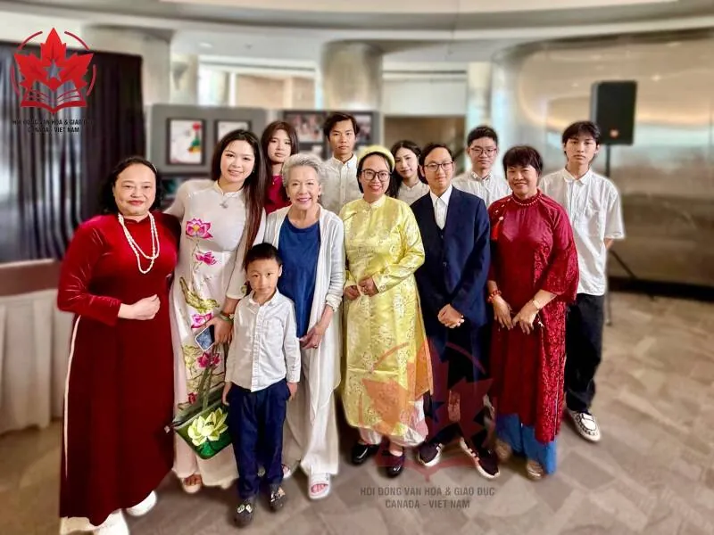

TORONTO, ngày 10/5/2026 — Nhà sáng lập kiêm Chủ tịch Hội đồng Văn hoá & Giáo dục Canada – Việt Nam (CVCEC) Phan Thị Quỳnh Trang cùng các thành viên Viet Youth Readiness Hub (VYRH) đã dự lễ khai mạc chính thức Tháng Di sản châu Á 2026 tại Metro Hall, Toronto, cùng các lãnh đạo cộng đồng.
Diễn giả chính Justin Poy nói về ảnh hưởng của văn hoá châu Á đến xu hướng tiêu dùng và nghệ thuật ở Canada, và nhắc lại những khó khăn, thành tựu của các thế hệ tiên phong người Canada gốc Á.
Đại diện CVCEC cũng gặp cựu Thượng nghị sĩ Vivienne Poy và Thị trưởng Toronto Olivia Chow, những người đã chúc mừng đoàn trong buổi lễ.
Các thành viên CVCEC mặc áo ngũ thân truyền thống của nhà thiết kế Quang Hoà. CVCEC cảm ơn nhà thiết kế đã trao tặng.
CVCEC xem bản sắc văn hoá là nền tảng cho tương lai, và thế hệ trẻ người Canada gốc Á là những đại sứ văn hoá có thể xây dựng sự thấu hiểu giữa các cộng đồng. CVCEC mời công chúng tham gia các hoạt động Tháng Di sản châu Á trong suốt tháng 5.



Về CVCEC
The Canada Vietnam Cultural & Educational Council (CVCEC) is a federally incorporated not-for-profit organization based in Toronto. It offers Vietnamese language and culture classes for children, helps newcomer and international students settle into Canadian schools and connects education communities in Canada and Vietnam. More information is available at cvcec.org.
Về Viet Youth Readiness Hub
Ra mắt tại Toronto tháng 4/2026, Viet Youth Readiness Hub (VYRH) là sáng kiến của CVCEC giúp học sinh và gia đình Việt Nam hiểu trường học Canada qua các buổi định hướng, mentoring và cơ hội lãnh đạo cho thanh niên.
-30-
Liên hệ báo chí
Phan Thị Quỳnh Trang, Nhà sáng lập kiêm Chủ tịch
Canada Vietnam Cultural & Educational Council
contact@cvcec.org